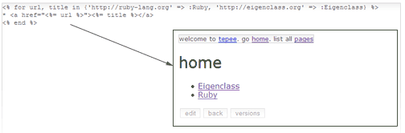

Open Up Your Wiki and We'll Finish it For You #
I’m hoping the Freaky Freaky Sandbox will avail me of having to finish anything ever again. Instead, I can just stop. Whatever it is, leave it unfinished. Gently place a sandboxed wiki on it. And then all of you at home can each add five lines of code and that’s it!

So, let’s get started on this sandboxed scriptable wiki. Step one, get some embedded Ruby in there. Here’s how.
%w(sandbox rubygems redcloth
camping acts_as_versioned).each { |lib| require lib }
Camping.goes :Tepee
Tepee::Box = Sandbox.safe
Tepee::Box.load "erbl.rb"
I’m using Tepee as the base. Sandbox gets loaded first because if you load RubyGems first, it goes bonkers. So, we’re going to start up a little barebones sandbox and load the ERbLight library, which is written in pure Ruby. Just to keep it simple.
Now to swap out the markup processor for a sandbox eval.
def markup str
@boxx = nil
begin
str = Tepee::Box.eval("ERbLight.new(#{str.dump}).result")
rescue Sandbox::Exception => @boxx
end
RedCloth.new(str, [ :hard_breaks ]).to_html
end
And that’s it. If the sandbox throws an exception, it’ll go in the @boxx ivar. It might be better to check for an exception when the user saves the page instead.
So, this sandbox does nothing. I mean you can do math and string stuff and hashes and whatever, but it’s not that great. But come back in a few days and I’ll show you some more tricks for the Tippy Tippy Tepee.
kode
well, uh, trippy.
futago
First ‘Tepee’ link is wrong. Should point to “http://code.whytheluckystiff.net/svn/sandbox/trunk/examples/tippytippytepee/tepee.rb”
MenTaLguY
Awe-some.
Out of curiousity, how far do you think we are from getting Markaby working in a Sandbox::Safe?
MenTaLguY
Incidentally, I’d like to move the current Sandbox class to something like Sandbox::Full, making Sandbox a module (we’d keep Sandbox.new and Sandbox.safe though). The rationale is that it would then become safe to introduce e.g. Sandbox::BoxedRef into a safe sandbox (once the import name issue was resolved).
Any objections/thoughts to that?
MenTaLguY
Ahh… hmm, actually I’d still need to prevent Sandbox.new and Sandbox.safe from getting copied in somehow. Maybe I’ll stick with a top-level BoxedRef for now…
why
futago: Oh, good, thanks.
MenTaLguY: Here’s what I was thinking about all that—and it’s exactly the code my hands are puttying up right now. The Sandbox::Ref class doesn’t need to show up in the sandbox. (Just like the Sandbox::Exception class doesn’t.) As long as the reference is somewhere in any sandbox, it won’t get GC’d.
I like the idea of making Sandbox a module anyway, though. Sandbox::Full and all that. And, probably, very soon, we could make it easy for people to keep their own pre-baked sandboxes as classes under that module.
There’s alot more to discuss, but I think I’d rather wrap up what I’m working on so we can try it out for reals and see.
FlashHater
Why won’t Markaby run in a safe-box? Too much metaprogramming-foo in it?
MenTaLguY
why: Ah! So, for Sandbox::Ref, you’re thinking of just returning the object boxed in the ref, rather than doing any marshalling at all [unless/until someone outside tries to unbox it]?
MenTaLguY
FlashHater: I think in principle it could be made to work—it’s all straight Ruby after all. At minimum right now you’d have to glom it all into a single ruby file, though, since you don’t really want to give
requireto a safe-sandbox.why
Some stuff will get marshalled. Strings and hashes and arrays and stuff. All the built-ins.
Anyway, after some more thinking, I think we’ll need a Ref class inside the box, too.
So, the
:refwill give the sandbox a proxy class calledMySQL. You can run any of the methods on theMySQL, but if it returns anything not referenced in the box, it’ll throw an exception. Else it gives a boxed ref.>> my = MySQL.init => #<Ref MySQL> >> my.query_rows("SELECT * FROM animals") => [['gopher'], ['jellyfish'], ['owl']] >> my.query("SELECT * FROM bacons") Sandbox::CannotReference: no MySQL::ResultSo, you’d need to do:
This probly sounds like I’m just spouting off ideas, but these ideas really have been baking while I work on stuffing Rails and Camping and Mongrel full of sandboxes. And yet, they’re dying to be debunked and outlawed.
J`ey
yay! why, this looks fun!
Dr Nic
There are so many fun places to stick a sandbox out on the streets and let the little people play with pure Ruby.
nil
is the issues on the BSD of Free resolved?
why
nil: Yes. I ended up having the same problems on Linux and the threading patches fixed it all.
MenTaLguY
why: hmm, it seems like I’d probably end up wanting finer-grained control of what to proxy than
:refwould provide. Either per-method, or be able to proxy something inside as ‘MySQL’ which is totally different outside (so it can do the filtering).why
Exactly, that’s what you’d do. If you don’t want the sandbox to access all method of the MySQL class, create a wrapper class as a proxy, with the methods you want.
Maybe the
ref(or maybelink) method could rename the reference.class MySQLSafe def query(str) MySQL.get_some_query_hashes(str) end end box.link :MySQLSafe => :MySQLRoughly.
MenTaLguY
Hmm, yeah, that’s roughly in the right neighborhood. What about calling it
box.proxy?If
box.linkorbox.proxyor whatever also works for modules, I think it should be sufficient for our other trap/hook/proxy needs as well (hooks can then be spot-applied to classes or eigenclasses viainclude).One thing we’ll probably need to be careful about is not to proxy methods inherited from
Object, except those overridden byMySQLSafeor a non-Objectancestor. Too easy to have security leaks otherwise.MenTaLguY
Can you go ahead and commit a rough implementation of this? Renamed proxy classes/modules and conservatively proxying everything that’s not a builtin. I think this is basically it, and we can file off any rough corners between us as we go.
alex
The sandbox is rockin’. A question from one of the uninitiated:
I noticed that some exceptions thrown while evaluating code in the sandbox cause the exception to be raised to the caller of Sandbox#eval, even if the exception is explicitly rescued:
FileUtils#mkdir_p is supposed to rescue the SystemCallError generated by Dir.mkdir(’/Users’) and Dir.mkdir(’/Users/alex’) if they already exist. In the Sandbox this exception terminates the call to box.eval and the exception is rescued in the “why have you forsaken me?” fashion, rather than the more popular “rescue me!” manner. The exception is “File exists – /Users/alex/ (Errno::EEXIST)”.
Is this the desired behavior?
MenTaLguY
No. Hmm, my guess is that Dir.mkdir is retaining a non-sandbox version of Errno::EEXIST someplace. Hence it wouldn’t descend from Exception in the sandbox, and the rescue Exception wouldn’t catch it. I’m not sure how this can be addressed.